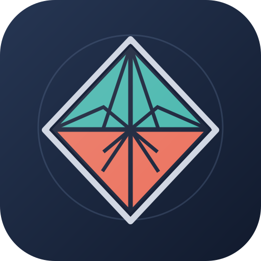

✦ מסלול הלימוד שלך
קובייה חדשה.
דרך חדשה לחשוב.
להכיר את ה־FTO דרך הידיים: לזהות חלקים, להבין תנועות, לתרגל טריגרים, ולהתקדם לפתרון מלא.
0 מתוך 7 משימותההתקדמות נשמרת במכשיר הזה
YOUR PATH
אין צורך לשנן הכול מראש
FTO QUESTלומדים לפתור, תנועה אחר תנועהלהכיר את ה־FTO דרך הידיים: לזהות חלקים, להבין תנועות, לתרגל טריגרים, ולהתקדם לפתרון מלא.